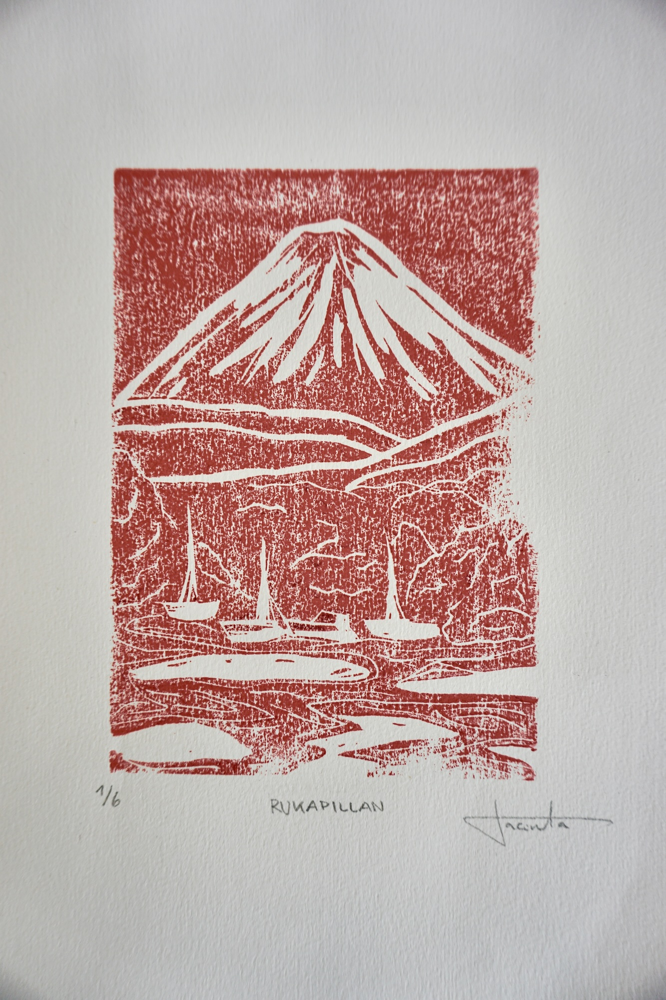
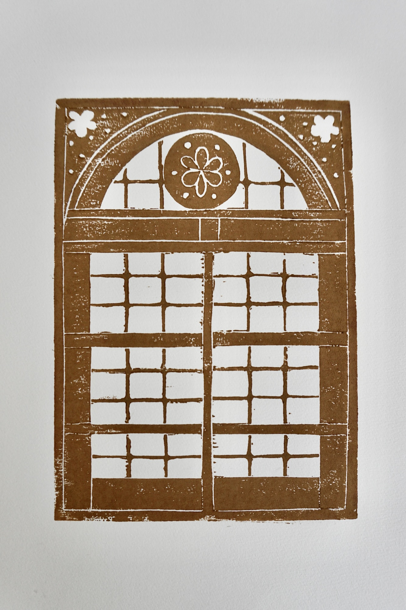

Productos
Cada objeto está pensado y hecho a pequeña escala, cuidando los materiales, el proceso y su uso en lo cotidiano. Los productos se realizan a pedido, respetando los tiempos y particularidades de cada pieza.

Funda de cuaderno de cuero A5
Funda de cuaderno inspirada en el concepto del Traveler’s Notebook, pensada para personas que disfrutan del journaling, la escritura y los procesos creativos. Diseñada para cuadernos formato A5, permite intercambiar el interior y adaptarse a distintos usos y momentos. El cuero le entrega resistencia y carácter, envejeciendo con el tiempo y el uso.
Ficha técnica
- Formato: A5 (15 × 22 cm)
- Materiales: Cuero natural, hilo encerado
- Color: Según disponibilidad
- Proceso: Corte y costura manual
- Tiempo de producción: 5 a 7 días hábiles
Precio: $35.000 CLP
Al ser un producto hecho a pedido y en cuero natural, pueden existir variaciones de color y textura. Cada pieza es única.
Solicitar pedidoObra gráfica

Corazón realista

Pescado
Rukapillán
Ventana